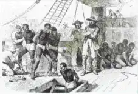

Le livre « l’esclavage aux Etats Unis, du déracinement àl’identité »
sorti en 2001 et écris par Anne Garait-Bourrier
nous donne des détails sur l’esclavage. Cela nous
permettra donc de mieux comprendre d’où vient
l’esclavage et ce qu’il a engendré.
De quoi parle « l’esclavage aux États-Unis Du déracinement à l’identité » ?
Ce livre écrit par Anne Garait-Bourrier fait le constat des
conditions des esclaves avant la guerre de secession et
de la voie historique et humaine qui mènera à
l’abolition.Il se base sur
des témoignages écrits d’esclaves
et de photographies des lieux qui
représentent ceux de l’époque.Il explique d’où est venu
l’esclavage, comment les Américains l’ont développé et
justifié.Il permet
de se rendre compte de la vie des
esclaves
durant cette période.
Pour acheter le livre c'est
ici
La problématique de l'esclavage, Une réponse en s'aidant du livre
L’esclavage a commencé dans les colonies portugaises
productrices de sucre de canne situé au Brésil. Les
premiers Africains furent utilisés en tant qu’esclaves ce
dès le XVIème siècle.Il engendre alors
le plus gros
mouvement démographique des temps modernes.
Les
noirs sont alors très appréciés car ils se
prêtent au
climat, ont beaucoup d’endurance et « coutent moins cher
». On pouvait
acheter un Africain à vie.
En
1705,
l’assemblé générale de Virginie
vote un code
noir qui légalise et justifie
dans une certaine mesure les
punitions corporelles et la mort des esclaves.
La traversé de l’océan était dificile : certains
se
suicidaient,
les femmes
étoufaient leur nouveaux nés
pour ne pas qu’ils vivent une vie d’esclave. Environ
25
millions d’individus seront transportés.
"Il y aura alors malgré cette
abolition deux fois plus d’esclave
en 1810 qu’en 1770 aux Etats-Unis."

Les esclaves sont rangés dans le bateau
En
1808
la traite négrière depuis l’Afrique vers les EtatsUnis
est abolie
par le gouvernement fédéral, cela réduit
l’arrivé de main d’œuvre.
Le sud
en plein développement
est
en grande demande d’esclave
et prêt à payer le prix
cher. Alors des gens mal intentionnés se rendent compte
qu’en kidnappant un noir et en le revendant, cela leur
fait gagner gros : c’est dans ce contexte que se place
l’histoire de
Solomon Northup.
Il y aura alors malgré cette abolition
deux fois plus
d’esclave en 1810 qu’en 1770 aux Etats-Unis.
Les esclaves sont souvent loués dans les plantations et
leur nourriture est souvent des céréales et du porc. Les
fruits et légumes arrivent en saison estivales ; ils
pouvaient aussi chasser et cultiver pour se nourrir plus
mais seulement après leur journée de travail. Pour leur
hygiène,
ils changeaient de vêtements 2 fois par ans.
Les cases où ils dormaient comportaient le minimum
vital pour une famille de 6 membres. Parfois, ils étaient
jusqu’à 12 dedans. De plus, celle-ci n’était pas isolée, et,
ils dormaient à même le sol.
Ils étaient
dirigés par le contremaitre,
comme on peut
le voir dans 12 Years a Slave, il dirige, surveille et corrige
les esclaves. Leur vie n’est pas facile là-bas :
pour avoir
tenté d’apprendre à écrire, avoir bu, s’être opposé à la
parole d’un blanc, s’être battu avec un noir, ou être
enceinte on pouvait être fouetté.
Mais, heureusement
la guerre de Sécession
a été la
première étape pour faire reconnaitre leur droit. Les
Noirs ont continué le combat au XXème siècle en
demandant
l’égalité de traitement avec les Blancs.
Même si, encore
aujourd’hui
un certain racisme
demeure aux Etats-Unis.
La problématique de l'esclavage, une
réponse en s'aidant du livre